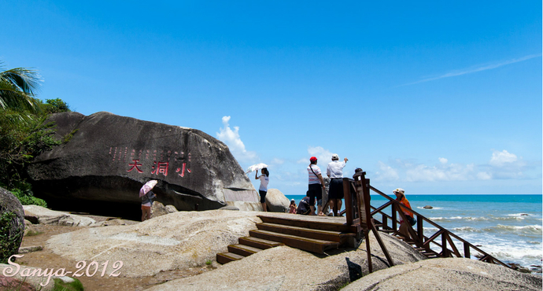
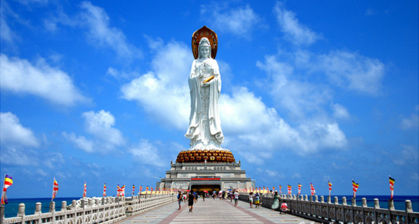
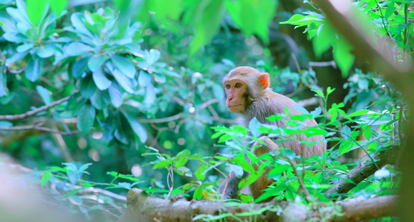
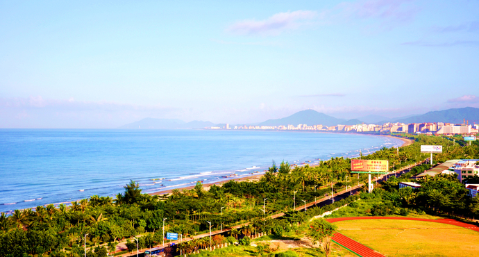
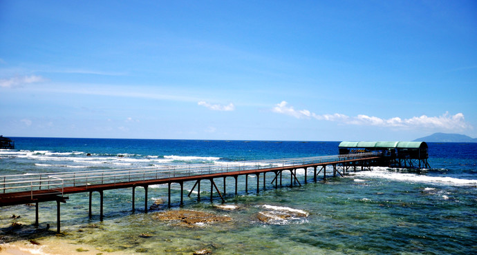
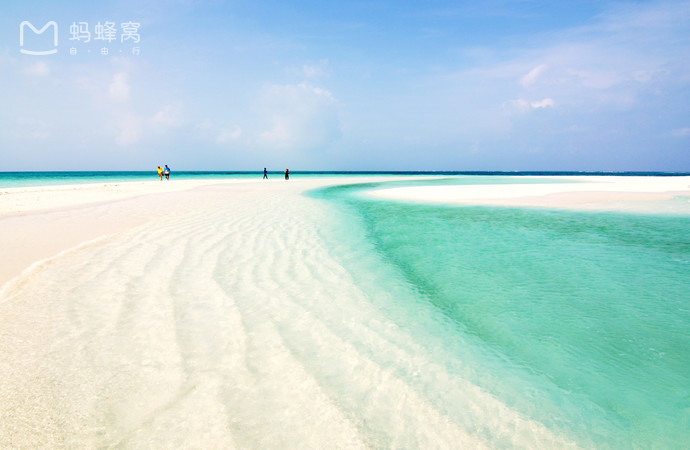
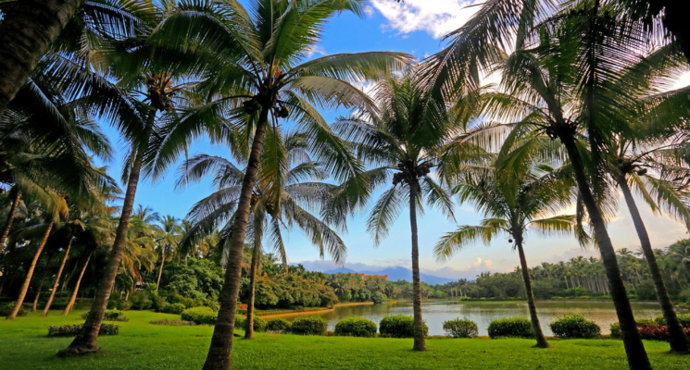

Xinglong tropical botanical garden is located in the hainan xinglong overseas Chinese tourism economic zone, established in 1957, affiliated to the ministry of agriculture flavor beverage research institute, Chinese academy of tropical agriculture, is the earliest open to the public to visit hainan tropical botanical garden. The botanical garden covers an area of over 600 mu, with more than 2,300 plant varieties, and is divided into five functional areas, with rich species and beautiful landscape. Botanical garden has a tropical cash crops, trees and horticultural plant varieties, save the wild plant resources and rare species, the introduction of domestic and foreign famous tropical plant species, reasonable configuration, combined with the geologic and layout of the beautiful landscape, is a rich species resources, beautiful landscape, with scientific research, popular science, sightseeing and plant germplasm resources protection function of comprehensive tropical botanical garden.
![ Size of cave scenic area (the original sea scenic spot mountain wonders, called AoShan size cave), located in sanya city, 40 km west of south shanxi no.107, with a total area of 22.5 square kilometers, the scenic spot has 800 years of history, is a famous Taoism culture scenic area. The scenic spot is known as the first scenic spot in the scenic area with its beautiful sea scenery, mountain scenery and stone scenery. In the scenic area, there are still "xiao dongtian", "the fishing platform", "the wonders of the sea", "the immortal foot", "the test sword peak" etc. The mountains, the sea and the forest spring are the necessary conditions for making a tourist attraction. Here, on the edge of the cliffs of the gulf of cliff. The cloud is deep in the mountains, and the rocks are in the dark. The coast is full of the gods and axes, and the shoals of light; Between the mountains and the sea is like a long scroll drawing.](images/大小洞天/wKgB21BBBmHoSB1cAAp6LhN8j1477.jpg){kind=link}
![ Nanshan, facing the south China sea, is located in the only tropical coastal city in China, 20 kilometers southwest of sanya, the southernmost mountain in China. Nanshan is traditionally referred to as the "land of blessing". According to the buddhist scriptures, the goddess of mercy, the goddess of mercy, has made twelve great wishes to save the people, and the second wish is to "always live in the south China sea." The tang dynasty famous big monk distinguishing mage five dongdu Japan failed to carry forward the dharma, the fifth drift to nanshan, live here for a year and a half and built buddhist temple, initiations sermons, then sixth dongdu Japan's final success. Japan's first air-sea monk, the tang monk, also landed in China, stopping to pass the law. China's famous phrase "happiness as immense as the Eastern Sea, live as long as the southern mountain" has a long history of nan shan and fushou culture.](images/南山/wKgBpVYA0pqAWXoVAAZQ4dYa44E774.png){kind=link}
![ The monkey island of south bay is located in the south bay peninsula, about 14 kilometers south of lingshui county in hainan province, and it is the only natural reserve in the world. The island in addition to nearly 400 kinds of tropical plants, nearly hundred kinds of animals, the original natural environment and more than 2500 national second class protected animals macaques, so people call it "monkey island". It is the only island type macaques in our country. Currently, the seaside project of the second phase of development is also opened to the outside world. Due to the scenic spot on the peninsula, if you want to enter the monkey island, can choose to take a sightseeing cable car arrived at the scenic area directly, or choose a boat arrived in the peninsula of the dock, then take the scenic area tourist car to monkey island, south bay. The time is about 8 to 10 minutes. Entering the gate, the first thing you will see is the monkey island sculpture square. It's a monkey sitting in Darwin's "the origin of species" holding the skull of a man thinking. The sculpture is a replica of a gift sculpture by the famous American red capitalist Dr. Hamer to former Soviet leader vladimir Lenin. After viewing the sculpture, visit the rhesus macaques. By monkey captain led banner cute monkeys welcome honor guard, also can see the monkey water park - SAN pool "bath", you can see in five-star pool monkeys or diving, swimming, or high-rise diving. Macaques are full of "human nature" in macaques.](images/南湾猴岛/wKgB6lRdA8SAeAETAAxaOkZp2rU36.jpg){kind=link}
![ The sanya bay resort is close to downtown sanya and stretches for 22 kilometers. The bay of the gulf of changsha is fine, and the green trees on the shore make up the beautiful scenery line of the seaside tourist city of sanya. The city's roads will be made straight by the sea, and will be completed in three linhai square and a seaside park. Long bay, the program is divided into three sections, even a city as amusement sightseeing roaming area, is a bit far for public swimming by the sea and maritime activity area, again far is with a batch of resort leisure resort area.](images/三亚湾/wKgB6lPl5hGABS37ADfSo9wdRQU43.jpg){kind=link}
{kind=link}
![ West island and hawksbill island, west decided island, sanya bay, sanya in hainan province, a total area of 2.8 square kilometers, more than 4000 residents, from generation to generation fish for a living, is the second largest island of hainan island coastal after continents. The west island is eight nautical miles from downtown sanya, and it takes 10 minutes or 15 minutes to get to the west island in a speedboat or a cruise ship from the port of xiaoqi, a gateway to the island of west island. The island is one of the few islands with fresh water resources and rich vegetation around hainan island. There are more than two thousand kinds of plants. And grow a lot of precious tree species, if there is a known as the giant panda in the plant kingdom of dragon's blood trees, and there are many rare plants, such as "symbiosis", "parasitic", "kill" and so on. The eastern and southern peaks of the island are connected by a peak of 79.9 meters and a cliff stand.](images/西岛/wKgB6lPl6veAMRauAAv9U-i1OS423.jpg){kind=link}
![ Xisha islands is mainly composed of yongle and xuande islands, this piece of large and small coral islands floating in more than 50 square kilometers of sea, beautiful and pure. The islands' first big island, yongxing island, is like a tropical botanical garden. There are tropical plants, and the seasons are luxuriant; The island is known as the "bird's paradise", with more than 60,000 seabirds on the island. As far away from the mainland, the beaches are white, the water is clean, the highest visibility is 40 meters, and the seven lantau is the best dive site.](images/西沙群岛/wKgB6lQ2DJWAcM8BAAiA48Wjwa498.jpg){kind=link}
![ Xinglong tropical botanical garden is located in the hainan xinglong overseas Chinese tourism economic zone, established in 1957, affiliated to the ministry of agriculture flavor beverage research institute, Chinese academy of tropical agriculture, is the earliest open to the public to visit hainan tropical botanical garden. The botanical garden covers an area of over 600 mu, with more than 2,300 plant varieties, and is divided into five functional areas, with rich species and beautiful landscape. Botanical garden has a tropical cash crops, trees and horticultural plant varieties, save the wild plant resources and rare species, the introduction of domestic and foreign famous tropical plant species, reasonable configuration, combined with the geologic and layout of the beautiful landscape, is a rich species resources, beautiful landscape, with scientific research, popular science, sightseeing and plant germplasm resources protection function of comprehensive tropical botanical garden.](images/兴隆热带植物园/wKgBs1ZKzAeAGrr9AAxbMO1Jhnc764.png){kind=link}